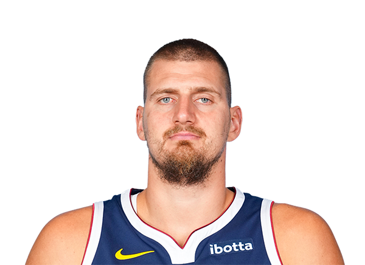
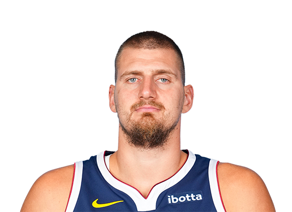

Nikola Jokić: El MVP que redefineix el bàsquet
Amb una temporada excepcional, Jokić ha liderat els Denver Nuggets amb una combinació única de visió de joc, força física i intel·ligència tàctica. El seu domini ha estat total a l'NBA 2024-2025.
Estadístiques de la Temporada
- Punts per partit: 26.4
- Rebots: 12.3
- Assistències: 9.8
- Triple-dobles: 25
- EFG%: 63.2%
Galeria d'imatges
 

Biografia i trajectòria
Nascut a Sombor, Sèrbia, Nikola Jokić va arribar a l'NBA com una promesa desconeguda. Triat amb el pick 41 del draft del 2014, la seva evolució ha estat meteòrica. En menys d’una dècada ha passat de ser un pivot amb bon passi a un dels jugadors més complets i influents de la lliga.
Jokić ha guanyat diversos premis MVP, lidera la franquícia de Denver amb carisma i humilitat, i ha trencat els estereotips sobre la posició de pivot amb la seva capacitat creativa. Aquest 2025, ha tornat a demostrar que és el cor dels Nuggets.
Impacte al joc i influència global
Jokić no només ha tingut un impacte estadístic. La seva manera de jugar inspira tota una generació d’aficionats i entrenadors. És un líder silenciós, però absolutament decisiu. Amb ell, Denver s’ha convertit en un referent de joc col·lectiu.
“És com tenir un base en un cos de pivot” — Declaració d'un rival de conferència.